云间日麻0.5.33 · 手牌中轴与副露位置
自家副露再下移8个屏幕像素，尺寸保持。手牌无碰撞时对齐牌桌中轴；左右安全边距不对称时也保持对齐。对照中的黄线表示牌桌中轴，原始截图不含辅助线。保留实际公开牌遮挡时的避让。
10张实际Unity截图及2张等比例对照图。截图来自合成测试局面，未做安卓真机或多手机热点联机测试。4:3窄画面保留原有副露上移避让。
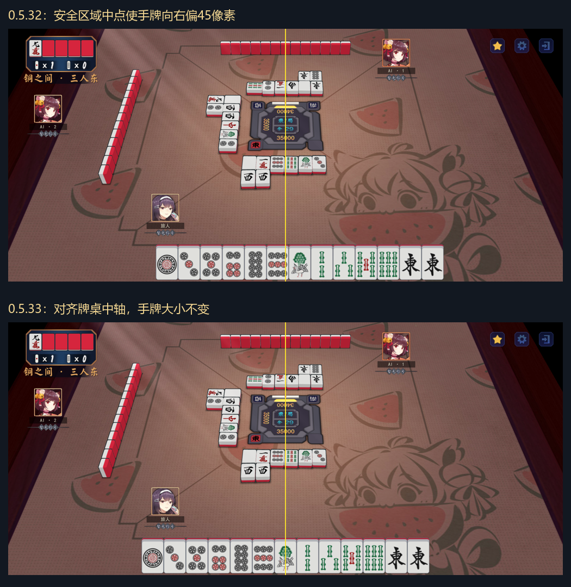
unity-0.5.33-hand-comparison.png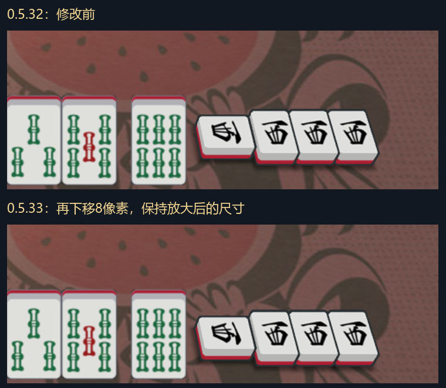
unity-0.5.33-meld-comparison.png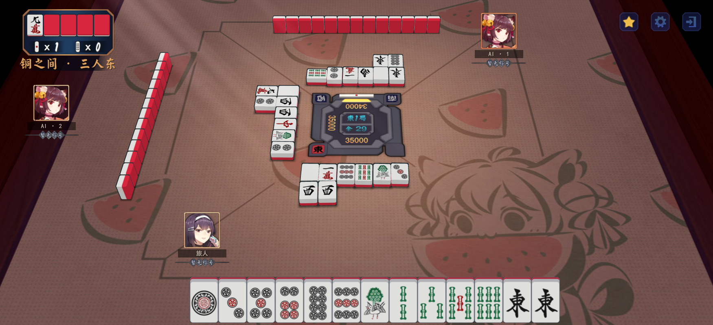
unity-0.5.33-review-0533-01-hand-before-left-safe.pngunity-0.5.33-review-0533-02-hand-after-left-safe.png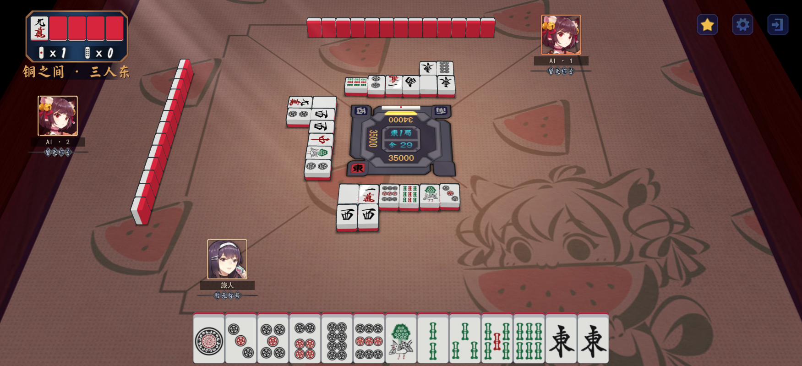
unity-0.5.33-review-0533-03-hand-after-right-safe.png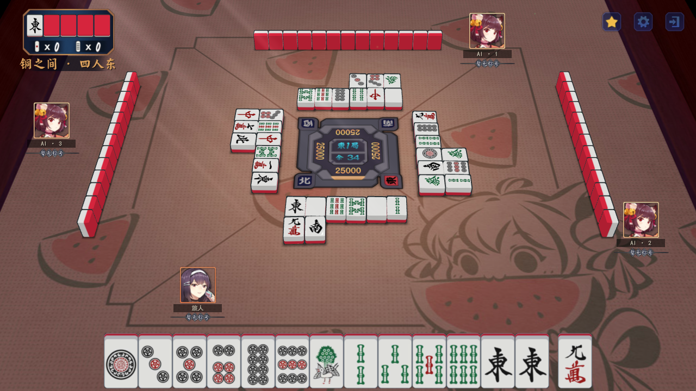
unity-0.5.33-review-0533-04-hand-14-1280.png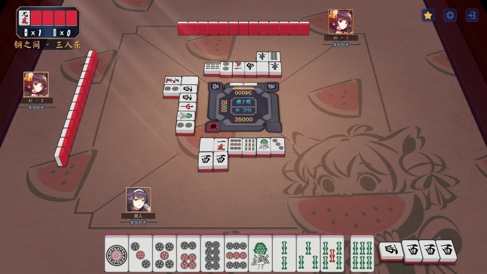
unity-0.5.33-review-0533-05-meld-before-1280.png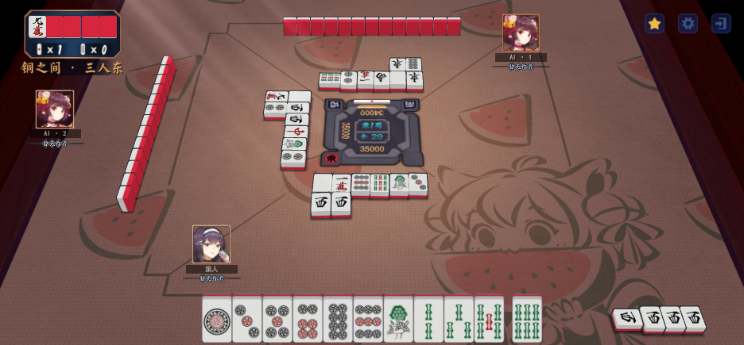
unity-0.5.33-review-0533-05-meld-before-936.png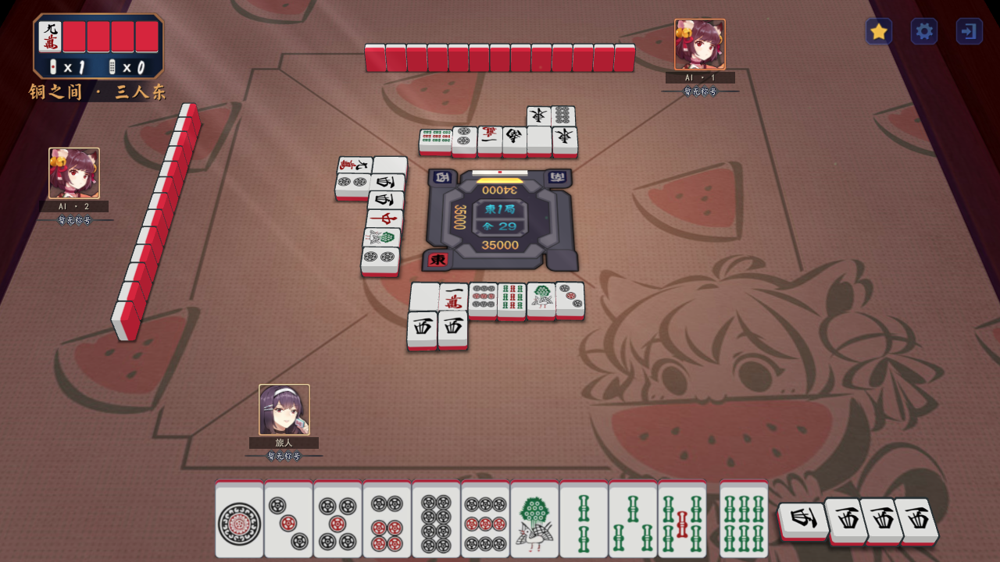
unity-0.5.33-review-0533-06-meld-after-1280.png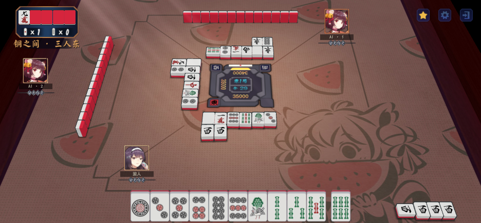
unity-0.5.33-review-0533-06-meld-after-936.png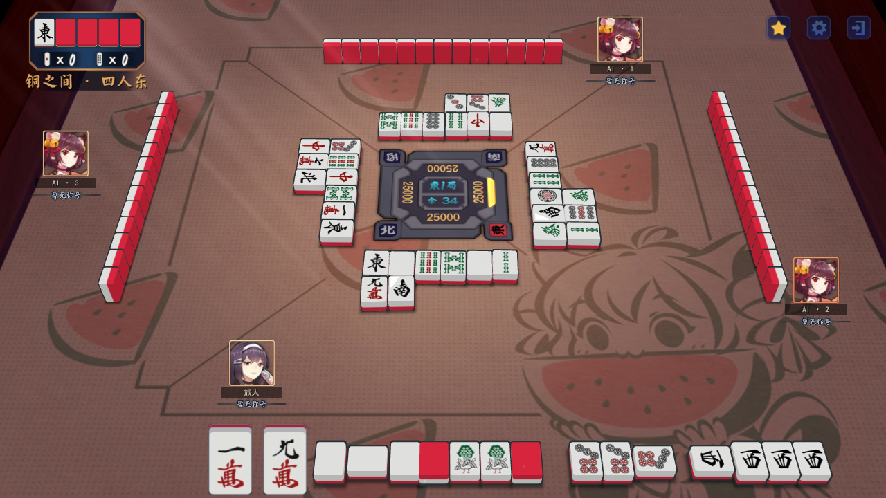
unity-0.5.33-review-0533-07-four-melds-1280.png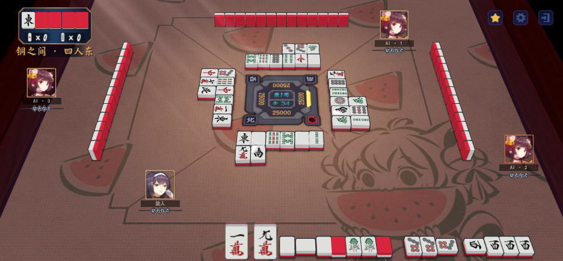
unity-0.5.33-review-0533-07-four-melds-936.png